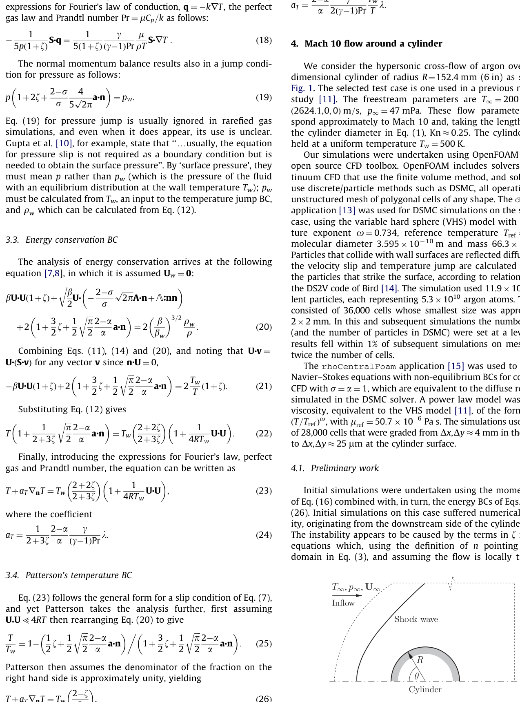
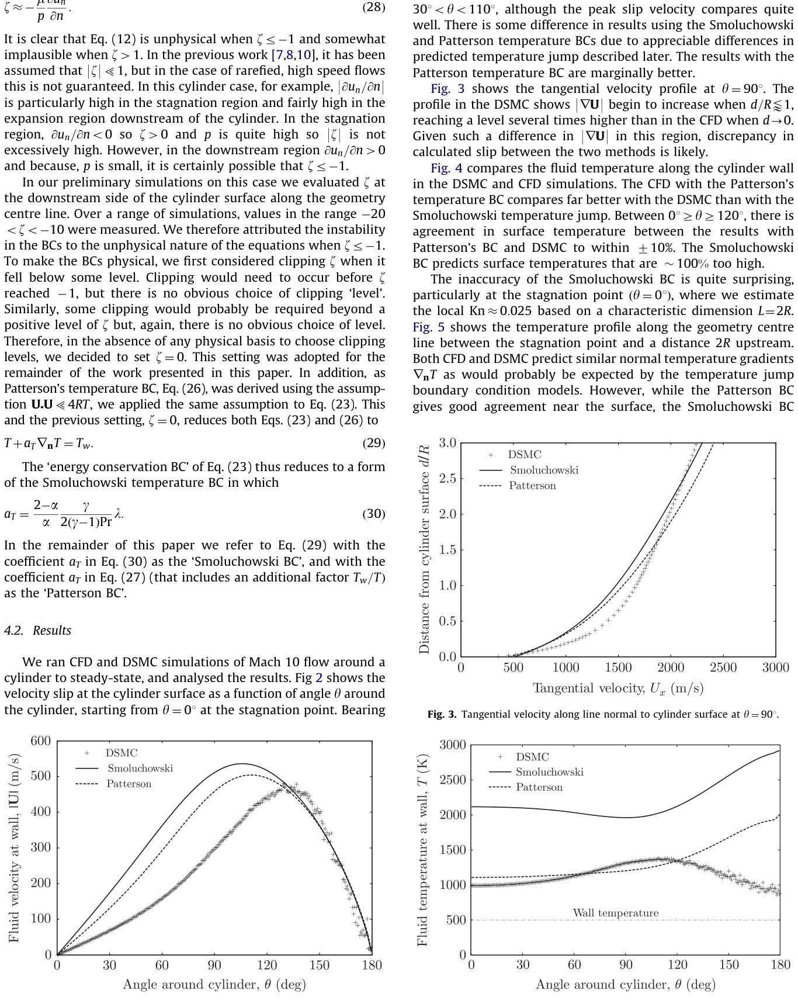
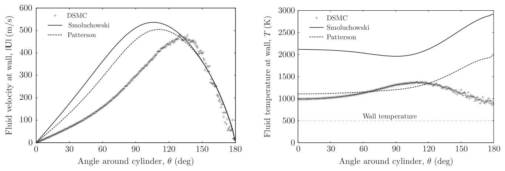
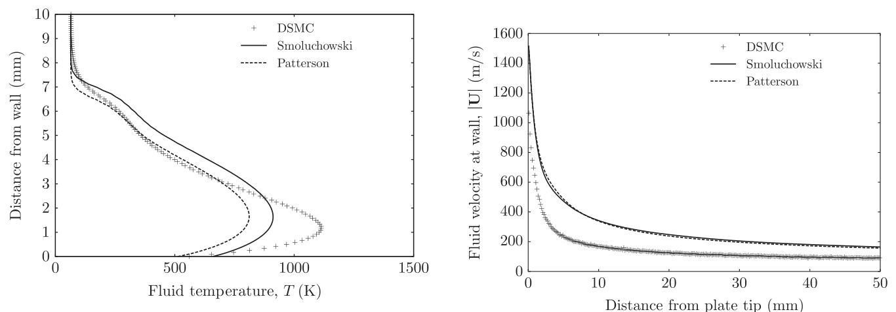

01中文摘要
本文考察 Navier–Stokes–Fourier 方程配合非平衡边界条件模拟稀薄高超声速流动，重新审视 Patterson 基于 Grad 矩法导出的速度滑移和温度跳跃关系。作者用 Patterson 与 Smoluchowski 条件的 CFD 和 DSMC 计算 Mach 10 圆柱和 Mach 12.7 平板流动。流动非平衡很强，但 Patterson 温度跳跃结果仍与 DSMC 吻合较好，并优于标准 Smoluchowski 条件；作者认为弱非平衡假设引入的附加约束在高非平衡下反而改善了边界条件行为。
原始摘要（英文/原文）
This paper investigates the use of Navier–Stokes–Fourier equations with non-equilibrium boundary conditions (BCs) for simulation of rarefied hypersonic flows. It revisits a largely forgotten derivation of velocity slip and temperature jump by Patterson, based on Grad’s moment method. Mach 10 flow around a cylinder and Mach 12.7 flow over a flat plate are simulated using both computational fluid dynamics using the temperature jump BCs of Patterson and Smoluchowski and the direct simulation Monte-Carlo (DSMC) method. These flows exhibit such strongly non-equilibrium behaviour that, following Patterson’s analysis, they are strictly beyond the range of applicability of the BCs. Nevertheless, the results using Patterson’s temperature jump BC compare quite well with the DSMC and are consistently better than those using the standard Smoluchowski temperature jump BC. One explanation for this better performance is that an assumption made by Patterson, based on the flow being only slightly non-equilibrium, introduces an additional constraint to the resulting BC model in the case of highly non-equilibrium flows.
02阅读说明
数值模拟为主、含理论重述的期刊论文（Progress in Aerospace Sciences 52 (2012) 80–87，8页）。bundle 提供全文与13张图件清单；第81–83页公式文本层乱码，已回读 PDF 第2–5页核对式(1)–(30)的主要符号与系数。来流条件、网格/粒子数、对比误差均有交代，信息完整度较高；图3、图5–7等剖面图的定量读数仅能依据图注与正文描述。 文章类型：期刊、综述
03一句话核心与三句话摘要
重访Patterson矩法边界条件，在马赫10圆柱与马赫12.7平板稀薄流中对比DSMC，Patterson温度跳跃式一致优于Smoluchowski式。
- 高超声速稀薄流动中NSF方程与常规Maxwell/Smoluchowski壁面条件在强非平衡区失效，而Patterson基于Grad矩法的滑移/跳跃推导长期被忽视。 AI概括
- 作者用OpenFOAM的rhoCentralFoam与dsmcFoam计算马赫10绕圆柱和马赫12.7绕平板，Patterson温度BC在圆柱0–120°内与DSMC相差±10%，在平板x=25/50 mm处相差7%/4%，均优于Smoluchowski的约100%/18%/16%高估。 AI概括
- 作者把改进归因于Patterson推导中“分母≈1”假设带来的Tw/T因子，并将其解释为超出适用范围时附加的模型约束；速度滑移BC仍未改进，留作后续工作。 AI概括
04核心内容清单
| 要点 | 类型 | 重要性 | 原文依据 | 属性 |
|---|---|---|---|---|
| 常规Maxwell/Smoluchowski条件只给切向速度、缺法向分量与壁面参考速度，且忽略应力张量的转置/迹项，曲面与可压缩流中不完整。 | 理论批评 | A | p81–82 §2，式(3)–(5) | 原文明确 |
| 两式实际是Robin条件φ+a n·∇φ=b（温度用φ+aS·∇nφ=b），并非表面上的Dirichlet条件。 | 理论形式 | A | p82 §2，式(6)–(7) | 原文明确 |
| Patterson用Grad矩法把入射分布写成f=f0[1+F(H)]，在漫反射、反射为Tw处Maxwell分布的假设下积分质量、动量、能量。 | 推导框架 | A | p82 §3，式(8)–(11) | 原文明确 |
| 质量守恒给出反射粒子密度ρw/ρ=√(T/Tw)(1+ζ)，ζ=A:nn/2=−σnn/(2p)是法向黏性应力与压力之比。 | 推导结果 | B | p82 §3.1，式(12)–(13) | 原文明确 |
| 切向动量守恒给出含曲率修正项与热蠕变项的速度滑移式(16)，系数a_U=λ(2−σ)/[σ(1+ζ)]。 | 推导结果 | A | p82–83 §3.2，式(14)–(18) | 原文明确 |
| 法向动量守恒给出压力跳跃式(19)，但通常被稀薄气体模拟忽略，且其用法不明确。 | 推导结果 | B | p82–83 §3.2，式(19) | 原文明确 |
| 能量守恒先给出含U·U/(4RTw)与ζ的一般温度BC式(23)；Patterson再假设U·U≪4RT且分母≈1，得到式(26)与含Tw/T的系数式(27)。 | 推导结果 | A | p83 §3.3–3.4，式(20)–(27) | 原文明确 |
| 圆柱下游中心线实测ζ约−20至−10，式(12)在ζ≤−1时非物理；无物理截断依据，作者令ζ=0，使式(23)与(26)退化为式(29)。 | 数值实现 | A | p84 §4.1，式(28)–(30) | 原文明确 |
| 圆柱壁温：0–120°内Patterson与DSMC差±10%，Smoluchowski高约100%；驻点局部Kn≈0.025，θ=90°约0.25，尾迹>10。 | 结果 | A | p84–85，图4、图6、图7 | 原文明确 |
| 平板壁温：x=25 mm处Patterson误差7%、Smoluchowski高18%；x=50 mm处为4%与16%。 | 结果 | A | p86，图10、图11 | 原文明确 |
| 速度滑移仍偏差明显：周向30°–110°内CFD/DSMC差异大，平板下游DSMC滑移约为CFD的50%，DSMC近壁速度梯度更陡。 | 结果/局限 | A | p84、p86，图2、图3、图12、图13 | 原文明确 |
| 作者把Patterson的改进解释为Tw/T因子把理论有效性约束转化为附加模型约束，属启发式修正；BC在超过某Kn后与NSF同样失效。 | 机理解释 | B | p87 §6 | AI概括 |
05引言：研究问题与领域缺口
高超声速飞行器气动热设计依赖风洞、飞行试验与CFD；在低密度或大密度梯度区，NSF方程的线性应力–应变率和Fourier热流假设以及无滑移/等温壁条件不再成立，需要用非平衡边界条件。过渡区0.001<Kn<1内DSMC代价随Kn降低急升（Δx∝λ、Δt∝λ，估算Kn降10倍可使计算时间增约10^4倍），因此仍需要连续介质CFD。作者指出常规Maxwell速度滑移式(3)与Smoluchowski温度跳跃式(4)存在三类问题：只给切向速度、无法向分量与参考壁面速度；忽略应力张量中的转置/迹项（曲面与可压缩流重要）；形式上像Dirichlet条件而实际是Robin条件。论文目标是重述Patterson 1956年基于Grad矩法的推导，并在两个强非平衡算例中检验其温度跳跃BC相对Smoluchowski式的表现（p80–82，§1–2）。
06流动条件与几何构型
| 项目 | 数值/描述 | 依据 | 备注 |
|---|---|---|---|
| 气体 | 氩（argon，单原子） | p83 §4；p85 §5 | |
| 圆柱几何 | 二维圆柱，半径R=152.4 mm（6 in） | p83 §4，图1 | |
| 圆柱来流 | T∞=200 K，U∞=(2624.1, 0, 0) m/s，p∞=47 mPa | p83 §4 | |
| 圆柱马赫数与Kn | M∞≈10；以圆柱直径为特征长度Kn≈0.25 | p83 §4，式(1) | |
| 圆柱壁温 | Tw=500 K，均匀 | p83 §4 | |
| 平板几何 | 二维平板，0°攻角；计算域出口x=55 mm | p85 §5，图8 | |
| 平板来流 | T∞=64.5 K，U∞=(1893.7, 0, 0) m/s，p∞=3.73 Pa | p85 §5 | |
| 平板马赫数与Kn | M∞≈12.7；Kn=λ∞/x，λ∞=0.23 mm | p85 §5 | |
| 平板壁温 | Tw=292 K，均匀 | p85 §5 | |
| 适应系数 | σ=α=1（等效于DSMC的漫反射） | p83 §4 | |
| 圆柱DSMC设置 | VHS ω=0.734，Tref=1000 K，分子直径3.595×10^-10 m，分子质量66.3×10^-27 kg；11.9×10^6等效粒子（每个代表5.3×10^10原子）；36,000网格，最小约2 μm | p83 §4 | |
| 圆柱CFD设置 | 28,000网格，远场Δx,Δy≈4 mm至壁面25 μm；μ=μref(T/Tref)^ω，μref=50.7×10^-6 Pa·s | p83 §4 | |
| 平板DSMC设置 | 1.58×10^6等效粒子（每个代表9.7×10^8原子）；75,600个约0.17×0.17 mm方格 | p85 §5 | |
| 平板CFD设置 | 28,000网格；y=25 mm处Δy=1.2 mm至壁面0.12 mm；板尖Δx=0.15 mm至出口1.5 mm | p85 §5 | |
| 网格/粒子无关性 | 单元数与粒子数取“与网格加倍后的计算相差1%以内”的水平 | p83 §4 |
07核心现象与关键参数
| 参数 | 定义 | 数值 | 关系/说明 | 依据 |
|---|---|---|---|---|
| Kn（圆柱） | 以圆柱直径152.4 mm为特征长度 | ≈0.25 | p83 §4 | |
| 局部Kn（驻点） | L=2R估算 | ≈0.025 | p84 §4.2 | |
| 局部Kn（θ=90°） | 圆柱最高点附近 | ≈0.25 | p85 §4.2 | |
| 局部Kn（尾迹θ=180°） | 密度极低区 | >10 | p85 §4.2 | |
| Kn（平板） | Kn=λ∞/x，x为距板尖距离，λ∞=0.23 mm | x<5 mm时Kn>0.05 | p85 §5 | |
| ζ | ζ=A:nn/2=−σnn/(2p)，法向黏性应力/压力 | 圆柱下游中心线约−20至−10；计算中取0 | p84 §4.1 | |
| Tw/T∞（圆柱） | 壁温与来流温度比（由500 K/200 K计算） | 2.5 | p83 §4；比值为AI推断 | |
| Tw/T∞（平板） | 壁温与来流温度比（由292 K/64.5 K计算） | ≈4.53 | p85 §5；比值为AI推断 | |
| 圆柱滑移速度峰值 | 图2读图，壁面滑移速度 | 约500 m/s（读图估计） | 图2，p84 | |
| 圆柱壁温误差 | 相对DSMC，0≤θ≤120° | Patterson ±10%；Smoluchowski约+100% | p84 §4.2，图4 | |
| 平板壁温误差 | 相对DSMC的壁面温度误差 | x=25 mm：Patterson 7%、Smoluchowski +18%；x=50 mm：4%、+16% | p86 §5，图10、图11 | |
| DSMC/CFD滑移速度比 | 平板下游平台段 | DSMC约为CFD的50% | p86 §5，图12 |
08方法与数据
采用OpenFOAM框架：连续介质用rhoCentralFoam有限体积求解NS方程并施加非平衡BC（σ=α=1，等效漫反射）；粒子法用dsmcFoam，VHS模型ω=0.734、Tref=1000 K、分子直径3.595×10^-10 m、质量66.3×10^-27 kg。圆柱算例：二维圆柱R=152.4 mm，氩气，T∞=200 K、U∞=(2624.1,0,0) m/s、p∞=47 mPa、M∞≈10、以直径计Kn≈0.25、Tw=500 K；DSMC 11.9×10^6等效粒子、36,000网格（最小约2 μm），CFD 28,000网格（远场4 mm至壁面25 μm），黏性用μ=μref(T/Tref)^ω、μref=50.7×10^-6 Pa·s。平板算例：0°攻角平板，T∞=64.5 K、U∞=(1893.7,0,0) m/s、p∞=3.73 Pa、M∞≈12.7、λ∞=0.23 mm、Tw=292 K；DSMC 1.58×10^6粒子、75,600个0.17×0.17 mm网格，CFD 28,000网格（y=25 mm处Δy=1.2 mm至壁面0.12 mm，平板尖端Δx=0.15 mm至出口1.5 mm）。网格/粒子数取“结果与网格加倍后相差1%以内”的水平（p83–85，§4–5）。
| 项目 | 内容 | 依据 | 备注 |
|---|---|---|---|
| 数值框架 | OpenFOAM；连续介质rhoCentralFoam有限体积，粒子法dsmcFoam | p83 §4 | |
| 控制方程 | Navier–Stokes–Fourier方程，配非平衡速度滑移与温度跳跃BC | p80摘要；p83 §4 | |
| BC实现 | σ=α=1；温度BC分别用Smoluchowski（式29+式30）与Patterson（式29+式27）；ζ=0 | p83–84 §4、§4.1 | |
| 黏性模型 | 幂律μ=μref(T/Tref)^ω，等效VHS；μref=50.7×10^-6 Pa·s | p83 §4 | |
| DSMC碰撞模型 | VHS，ω=0.734，Tref=1000 K | p83 §4 | |
| 壁面反射 | DSMC粒子漫反射；CFD σ=α=1与之对应 | p83 §4 | |
| 网格无关性 | 网格/粒子加倍后结果差<1% | p83 §4 | |
| 验证方式 | 与DSMC对比壁面滑移、壁温、法向温度/速度剖面；两套算例分别覆盖Kn≈0.25与0.05–1以上 | p84–86 §4.2、§5 | |
| 方法局限 | 未做实验对比；仅σ=α=1；二维单原子气体；未解析Knudsen层内部分布 | p87 §6 |
09核心推导与公式
以Grad矩法把壁面附近入射分子的分布函数写成对Maxwell分布的小扰动Hermite展开，对入射与反射分子分别积分质量、切向/法向动量与能量，得到反射粒子密度、速度滑移、压力跳跃与温度跳跃的联立边界条件；再对能量式作U·U≪4RT与分母≈1的简化，得到Patterson温度BC。
关键假设
- 壁面为漫反射，σ=α=1；入射分子分布仅小幅偏离Maxwell分布，反射分子为壁温Tw下的Maxwell分布
- ζ、a、A相对于1为小量（Grad展开有效性条件）
- 能量守恒推导中取壁面速度Uw=0
- 完全气体、Fourier导热定律q=−k∇T、Prandtl数Pr=μcp/k为常数
- Patterson简化中假设U·U≪4RT，并近似式(25)右端分母为1
推导过程
用λ/L及λ/Q·∇Q定义Kn，用于判断连续介质假设是否成立；λ由分子运动论给出。
Maxwell滑移含速度梯度项与热蠕变项；Smoluchowski温度跳跃与法向温度梯度成正比。作者同时给出牛顿流体应力张量，为后续指出式(3)遗漏转置/迹项作准备。
标量条件写成φ+a n·∇φ=b；矢量条件只对切向分量成立，法向分量仍为Dirichlet，并用S=I−nn把法向梯度投影到切平面。
以H=√(2β)C为归一化 peculiar 速度、β=1/(2RT)，把扰动F(H)展开到三阶Hermite多项式；系数a、A、𝒜由热流与应力张量确定，并利用矩约束得到式(11)的关系。
对入射与反射分子积分质量通量，得到壁面反射粒子密度与当地密度之比；差异来自温度不同导致的平均速率与分布函数差异，并由ζ修正。
把切向动量分成入射/反射两支并代入a、A，先得式(14)–(15)；再用应力张量与完全气体关系化为式(16)，其中含壁面速度、曲面曲率修正项S·(n·τtr)与热蠕变项S·q；热蠕变项用Fourier定律与Pr化为温度梯度。
法向动量平衡给出壁面压力与当地压力之差，修正项含2ζ与a·n；作者指出该式通常被忽略，且pw应由Tw、ρw反算，而不是直接作为边界压力。
对入射/反射分子积分能量通量（取Uw=0），结合式(11)、(14)与ρw/ρ，再代入Fourier定律、完全气体与Pr定义，得到含对流项U·U/(4RTw)与ζ因子的温度BC及系数aT。
先假设U·U≪4RT并重排能量式，再假设所得分式右端分母≈1，得到式(26)；系数式(27)比一般式(24)多出Tw/T因子。该步依赖ζ与a·n均为小量。
圆柱下游实测ζ=−20至−10，使式(12)在ζ≤−1时非物理；因无物理截断依据，作者取ζ=0，并把U·U≪4RT用于式(23)。式(23)与(26)同时退化为式(29)；系数用式(30)时称Smoluchowski BC，用式(27)时称Patterson BC，两者只差Tw/T。
适用边界：推导假设漫反射、入射分布仅小幅偏离Maxwell分布，要求ζ、a、A≪1；本文圆柱算例局部Kn达0.25、尾迹>10，严格超出适用域。ζ=0是无数值依据的强制修正；未考虑高阶应力项，作者推测高阶项可能改变ζ并消除非物理性，但未验证。仅单原子氩、二维、无化学/电离，σ=α=1，未评估适应系数影响。
10结果：主要发现与关键证据
圆柱：周向滑移速度在30°<θ<110°内CFD与DSMC差异明显，但峰值接近；Patterson与Smoluchowski温度BC给出的滑移略有差别，Patterson略好（图2，p84）。θ=90°法向切向速度剖面中DSMC在d/R≲1处|ρU|开始升高，壁面处比CFD高数倍（图3，p84）。壁面温度：0≤θ≤120°内Patterson与DSMC相差±10%，Smoluchowski高约100%，驻点处按L=2R估算局部Kn≈0.025（图4，p84）；θ=90°局部Kn≈0.25，偏差增大但Patterson仍较好（图6，p85）；尾迹θ=180°局部Kn>10，DSMC壁面附近∇T急剧变化而NS无法再现，Patterson在下游将壁温控制在DSMC的±5%内，Smoluchowski典型高20%（图7，p85）。平板：x<5 mm（Kn>0.05）两者明显不同，DSMC中激波在板尖前0.2 mm建立，CFD激波位于板尖稍下游、T在1–2 mm内由T∞升至波后值（p85）；x=25 mm处Patterson壁温误差7%、Smoluchowski高约18%（图10，p86）；x=50 mm处分别为4%与16%（图11，p86）；板面滑移速度在距板尖约10 mm后不再快速下降，DSMC平台滑移约为CFD的50%（图12，p86），x=25 mm切向速度剖面亦显示DSMC近壁梯度更陡、滑移更低（图13，p87）。
| 发现 | 证据 | 证据类型 | 强度 | 位置 | 属性 |
|---|---|---|---|---|---|
| 圆柱壁面温度：0≤θ≤120°内Patterson BC与DSMC一致到±10%，Smoluchowski BC高约100%；驻点局部Kn≈0.025。 | 图4壁温沿周向分布；正文给出±10%与“100% too high”。 | 定量对比 | 强 | p84 §4.2，图4 | 原文明确 |
| 平板壁温：x=25 mm处Patterson误差7%、Smoluchowski高18%；x=50 mm处为4%与16%，且Smoluchowski的过预测贯穿整个温度剖面。 | 图10、图11的温度剖面对比及正文百分比。 | 定量对比 | 强 | p86 §5，图10、图11 | 原文明确 |
| 速度滑移预测仍不理想：圆柱周向30°<θ<110°内CFD与DSMC差异明显，仅峰值接近；平板下游DSMC滑移约为CFD的50%。 | 图2周向滑移速度、图12板面滑移速度；正文“approximately 50%”。 | 定量对比 | 强 | p84、p86，图2、图12 | 原文明确 |
| DSMC在壁面附近给出更陡的切向速度梯度和更低的滑移：θ=90°处d/R≲1时|ρU|开始升高，壁面处比CFD高数倍；平板x=25 mm剖面同样近壁梯度更陡。 | 图3、图13法向切向速度剖面。 | 剖面证据 | 强 | p84、p87，图3、图13 | 原文明确 |
| 圆柱下游ζ实测−20至−10，导致式(12)出现负密度/温度的非物理行为；作者只能取ζ=0，说明矩法BC在强非平衡区已越界。 | §4.1对ζ范围的说明及式(28)近似。 | 数值稳定性/理论自洽性 | 强 | p84 §4.1，式(28) | 原文明确 |
| 平板前缘：DSMC中激波在板尖前0.2 mm建立，CFD激波位于板尖稍下游、温度在1–2 mm内由T∞升至波后值；x<5 mm（Kn>0.05）差异明显。 | 图9板面温度及正文对激波位置的描述。 | 流场结构 | 中 | p85 §5，图9 | 原文明确 |
| 网格/粒子无关性：单元数与粒子数取与“网格加倍”结果相差1%以内的水平。 | §4对圆柱算例网格与粒子数的说明。 | 数值验证 | 强 | p83 §4 | 原文明确 |
| Patterson BC的优势可归于系数中的Tw/T因子；该因子来自“分母≈1”的近似，属于把有效性约束转化为附加模型约束的启发式修正。 | §6对式(27)与式(30)差异及式(25)假设的讨论。 | 机理解释 | 中 | p87 §6 | 原文明确 |
11机制解释与论证链
物理机制分两层。其一是壁面Knudsen层内入射与反射分子分布不同：反射粒子在Tw下出射、平均速率与入射粒子不同，造成密度、切向动量和能量通量的不平衡，Grad矩法把这些差异集中到ρw/ρ、ζ与a、A中。其二是连续介质NSF方程无法描述Knudsen层的弥散结构，DSMC则直接模拟分子碰撞，因而在壁面附近给出更陡的速度梯度、更低的滑移速度和更快的激波/温度变化。Patterson温度BC相对Smoluchowski多出的Tw/T因子源于“分母≈1”的近似，该近似在强非平衡时本不成立，却意外地把壁温预测拉回DSMC附近；作者将其解释为把理论有效性约束转化为附加模型约束的启发式效果，而非严格的物理改进。
12讨论：结论、贡献与局限
论文将Patterson推导的ζ项视为入射/反射粒子分布差异的修正：ζ=A:nn/2=−σnn/(2p)。圆柱下游中心线实测ζ在−20至−10之间，而式(12)在ζ≤−1时给出负密度/温度，属非物理；由于没有物理依据选取截断水平，作者令ζ=0，并把U·U≪4RT同样用于式(23)，使式(23)与(26)都退化为式(29)。此时两者仅差系数：Smoluchowski用式(30)，Patterson用含Tw/T的式(27)。作者认为Tw/T因子相当于把“小幅偏离Maxwell分布”的有效性约束转成一个附加模型约束，因此在强非平衡区反而更接近DSMC；但推导本身要求ζ、a、A≪1，BC在超过某一Kn后与NSF方程一样失效。速度滑移BC仍存在曲率项与热蠕变项处理不完整的问题，作者仅测试了单一滑移式，建议后续改进（p84–87，§4.1、§6）。
作者结论
在M∞≈10绕圆柱与M∞≈12.7绕平板两个强非平衡稀薄流算例中，采用ζ=0的Patterson温度跳跃BC（式29+式27）比标准Smoluchowski BC（式29+式30）更接近DSMC：圆柱0–120°内壁温误差±10%对约+100%，平板x=25/50 mm处7%/4%对18%/16%。速度滑移BC仍不理想，DSMC滑移约为CFD的50%，近壁速度梯度也更陡。ζ在圆柱下游达−20至−10，表明基于小幅偏离Maxwell分布的矩法BC在强非平衡区已失效；取ζ=0只是避免非物理解的工程处理，并未恢复理论自洽性。作者结论是：连续介质CFD在超出适用域的流动中至少不应产生非物理或严重失真的解，Patterson式提供了比常规Smoluchowski式更好的温度边界，但还需更多验证并改进速度滑移BC。
主要贡献
- 系统重述并张量化了Patterson 1956年基于Grad矩法的非平衡边界条件推导，包括质量、切向/法向动量与能量守恒四部分。
- 明确指出常规Maxwell/Smoluchowski条件的表述缺陷：缺法向分量与壁面参考速度、遗漏应力张量转置/迹项、把Robin条件误当Dirichlet条件。
- 在M∞≈10圆柱与M∞≈12.7平板两个强非平衡算例中，用同一CFD框架定量比较Patterson与Smoluchowski温度BC对DSMC的误差。
- 发现并量化ζ在圆柱下游达到−20至−10的非物理区间，给出ζ=0的工程处理并讨论其理论代价。
- 提出Tw/T因子作为Patterson式在超适用范围仍表现较好的解释，为后续温度BC建模提供线索。
局限与未解决问题
作者承认：Patterson推导基于分布函数小幅偏离Maxwell分布，要求ζ、a、A≪1；本文流动Kn达0.25甚至>10，严格超出BC适用域。ζ=0没有物理依据，只是避免非物理解；应力仍用线性Newton关系，作者推测高阶应力项可能改变ζ但未实现。仅考虑σ=α=1、二维、单原子氩、无化学/电离/辐射，未评估适应系数与三维效应。AI补充：未与实验对比，DSMC本身虽是基准但仍依赖VHS参数与碰撞模型；网格收敛只与“加倍网格”比较1%，未给系统不确定度；速度滑移BC未改进，因此“Patterson更好”只适用于温度场。
13对高速流动与工程的意义
对高超声速稀薄过渡区CFD工程应用的意义在于：①给出了可直接实现的Patterson温度跳跃式及其与Smoluchowski式的唯一差别（Tw/T因子），便于在现有NSF求解器中替换测试；②量化了常规Smoluchowski式在强非平衡区可高估壁温约100%，提示热防护设计中若沿用该式可能显著保守，甚至在圆柱驻点区不如等温壁条件；③揭示了矩法BC的ζ项在Kn≳0.25时失去物理意义，提醒使用者区分“数值上不崩”与“理论上有效”；④为DSMC/CFD混合方法与壁面模型验证提供了圆柱/平板标准算例。以上工程含义多为AI推断，原文未展开具体型号或热防护设计建议。
14核心图件




15可引用原文素材
| 原文短句 | 可支持的观点 | 位置 | 使用建议 |
|---|---|---|---|
| “a largely forgotten derivation” | Patterson基于Grad矩法的推导长期被忽视，是本文重述的动机。 | p80 摘要 | 用于说明研究缺口与文献回顾的切入点。 |
| “unphysical when ζ≤−1” | 式(12)在强非平衡ζ下失效，是取ζ=0的直接原因。 | p84 §4.1 | 引用矩法BC适用边界时的关键短句。 |
| “we decided to set ζ = 0” | 作者对ζ项采取工程截断而非理论修正。 | p84 §4.1 | 说明数值实现中的妥协。 |
| “compares far better with DSMC” | Patterson温度BC在圆柱壁温上明显优于Smoluchowski。 | p84 §4.2 | 支持BC选择结论。 |
| “100% too high” | Smoluchowski在0–120°把壁温高估约一倍。 | p84 §4.2 | 量化常规BC误差。 |
| “within ±10%” | Patterson与DSMC在圆柱0–120°的壁温一致度。 | p84 §4.2 | 给出可信度区间。 |
| “50% of that from the CFD” | 平板下游DSMC滑移速度仅为CFD的一半。 | p86 §5 | 说明速度滑移BC仍未解决。 |
| “0.2 mm ahead of the plate tip” | DSMC中前缘激波在板尖上游建立，CFD则在下游。 | p85 §5 | 解释前缘区差异的流动图像。 |
16最终核验
| 核验项 | 结论 |
|---|---|
| 仅基于全文 | 是。仅使用bundle全文、图注与PDF第2–5页（式1–30）核对；未引入外部文献或数据。 |
| A 级要点有依据 | 是。A级要点均有页码、式号或图号支撑；定量百分比均来自正文原句。 |
| 属性标注 | 是。原文明确、AI概括、AI推断在three_sentence、core_points、findings及conditions备注中标注。 |
| 覆盖范围 | bundle共582行，已从PAGE 1读到PAGE 8（EOF）；公式文本层乱码处回读PDF第2–5页核对主要式子；图件清单13项可读。 |
| 无编造 | 是。未编造页码、图号、公式或数据；ζ范围、误差百分比、网格/粒子数均直接取自原文。图2峰值“约500 m/s”为读图估计并已注明。 |
需回原文确认
- ζ=0的强制设定对圆柱尾迹与下游温度场造成的具体误差未量化；若保留ζ或采用高阶应力模型，结果会如何变化？
- Patterson式的Tw/T因子在更宽Kn范围（如0.5–5）是否仍优于Smoluchowski？本文仅在Kn≈0.25圆柱与平板前缘Kn>0.05区检验。
- 速度滑移BC的曲率项与热蠕变项在圆柱曲面上的实际影响有多大？作者只用了单一滑移式，未与DSMC滑移做系数级标定。
- σ、α不等于1时两种温度BC的相对优劣是否改变？本文固定σ=α=1。
- 平板CFD网格在壁面0.12 mm、DSMC网格0.17 mm，二者与局部Knudsen层厚度是否匹配？文中仅给出1%网格加倍准则，未给Knudsen层解析度。
- 图5–7的法向温度剖面中，DSMC在壁面附近出现非单调升温（如x=25 mm处>1000 K再回落），其物理机制正文只归因于碰撞不足，是否与激波/边界层干扰的非平衡有关？
- 文中未与实验对比，Patterson BC在真实稀薄风洞条件下的表现仍需验证。
17关联文献
依据标签、板块、构型与作者脉络自动关联，可据此追踪同一问题的前序与后续工作。
18引用格式
选择期刊风格后复制；出处保留原刊名。BibTeX 可直接用于 LaTeX。
引用格式
Greenshields, C. J. & Reese, J. M. 2012 Rarefied hypersonic flow simulations using the Navier–Stokes equations with non-equilibrium boundary conditions. Progress in Aerospace Sciences 52, 80–87. https://doi.org/10.1016/j.paerosci.2011.08.001
PDF上传 PDF 并更新本页
本页缺少全文、摘要或图件时，可在浏览器本地补入 PDF。解析完全在本机完成，不上传网络；完成后会更新本页的 PDF 打开链接、原摘要、IMRaD 机器抽取、关键句与含图页面。复杂的公式语义与中文深度解读仍以原文和既有精读记录为准。